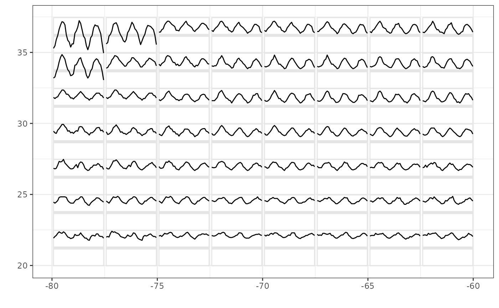

Create the data needed to generate a glyph plot.
glyphs( data, x_major, x_minor, y_major, y_minor, polar = FALSE, height = ggplot2::rel(0.95), width = ggplot2::rel(0.95), y_scale = identity, x_scale = identity )
| data | A data frame containing variables named in |
|---|---|
| x_major, x_minor, y_major, y_minor | The name of the variable (as a string) for the major and minor x and y axes. Together, each unique |
| polar | A logical of length 1, specifying whether the glyphs should
be drawn in polar coordinates. Defaults to |
| height, width | The height and width of each glyph. Defaults to 95% of
the |
| y_scale, x_scale | The scaling function to be applied to each set of
minor values within a grid cell. Defaults to |
Di Cook dicook@monash.edu, Heike Hofmann, Hadley Wickham
data(nasa) nasaLate <- nasa[ nasa$date >= as.POSIXct("1998-01-01") & nasa$lat >= 20 & nasa$lat <= 40 & nasa$long >= -80 & nasa$long <= -60 , ] temp.gly <- glyphs(nasaLate, "long", "day", "lat", "surftemp", height=2.5)#>ggplot2::ggplot(temp.gly, ggplot2::aes(gx, gy, group = gid)) + add_ref_lines(temp.gly, color = "grey90") + add_ref_boxes(temp.gly, color = "grey90") + ggplot2::geom_path() + ggplot2::theme_bw() + ggplot2::labs(x = "", y = "")